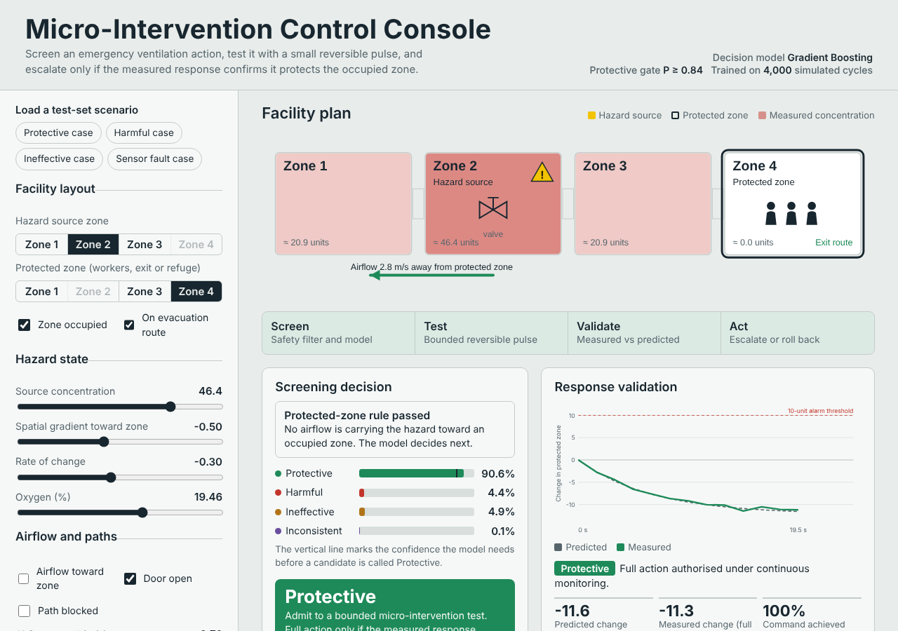
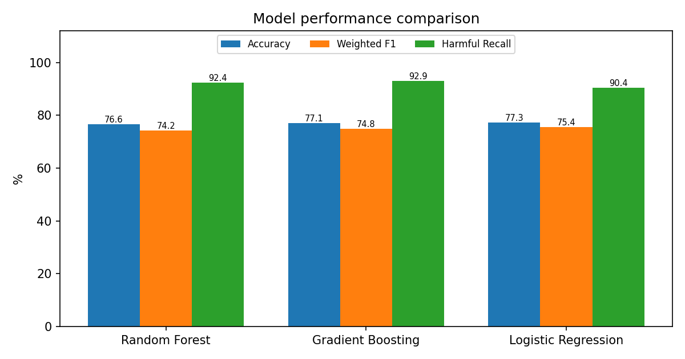

What it does
The machine-learning and control layer of a patent application on emergency control using reversible micro-interventions. The idea: before taking a large action in an emergency (here, ventilation to protect a zone), try a small action that can be undone, and escalate only when the measured response confirms it protects.
The classifier predicts whether a candidate micro-intervention will be Protective, Harmful, Ineffective or Inconsistent before it is physically tested. It is only the first safety layer: escalation to a full action still requires the measured response to confirm protection.
Try it
Open the control console: pick a scenario, see the screening decision with its probabilities, run the micro-intervention test and watch the actuator’s trust update. The page runs the same trained model in the browser, with no server.

Method
- Data: 5,000 records from a four-zone, source-informed simulator, with labels from stated rules (for example Harmful if the protected-zone concentration rises by more than 6).
- Leakage prevention: the outcome measurements are never model inputs.
- Models: Random Forest, Gradient Boosting and Logistic Regression on the same stratified 80:20 split.
- Safety gate: an action is called Protective only if P(Protective) is at least a threshold. The threshold is tuned with 5-fold out-of-fold predictions on the training set to keep the false-safe rate at or below 1%. The test set is never used for tuning.
- Selection: lowest test false-safe rate first, then highest harmful recall, then weighted F1.
Results
| Model | Accuracy | Harmful recall | False-safe rate | Threshold |
|---|---|---|---|---|
| Random Forest | 76.6% | 92.4% | 1.01% | 0.69 |
| Gradient Boosting (selected) | 77.1% | 92.9% | 0.76% | 0.84 |
| Logistic Regression | 77.3% | 90.4% | 0.76% | 0.85 |

The false-safe rate is the share of truly harmful actions that the gate let through as Protective: 3 of 396 harmful test cases for the selected model. Without the gate the same model scores higher accuracy (80.8%) but a false-safe rate of 2.0%, which is the trade the gate makes on purpose. In the control-layer analysis, 72.0% of harmful cases were flagged before the protected-zone rise crossed a 10-unit threshold, and rollback succeeded in 72.3% of eligible cases.
Tests
- Leakage. The post-intervention measurements never reach the model: not in the feature list, not in the saved pipeline, and shuffling them changes no prediction. A small tree that does see them scores over 97%, which is why the guard matters.
- Tuning on training data only. The threshold is the smallest one meeting the 1% target on out-of-fold training predictions, it does not move when every test row is changed, and in a full run each model was tuned on the 4,000 training rows only.
- Reproducibility. A test re-runs the whole experiment and gets the committed numbers; library versions are pinned so the saved model loads cleanly.
- A bug the browser test found: scikit-learn’s trees compare features as 32-bit floats and the exported JavaScript compared 64-bit ones, so 27 of 5,000 random inputs got different probabilities (by up to 0.16). The demo now rounds each input with
Math.froundand matches to 1e-16.